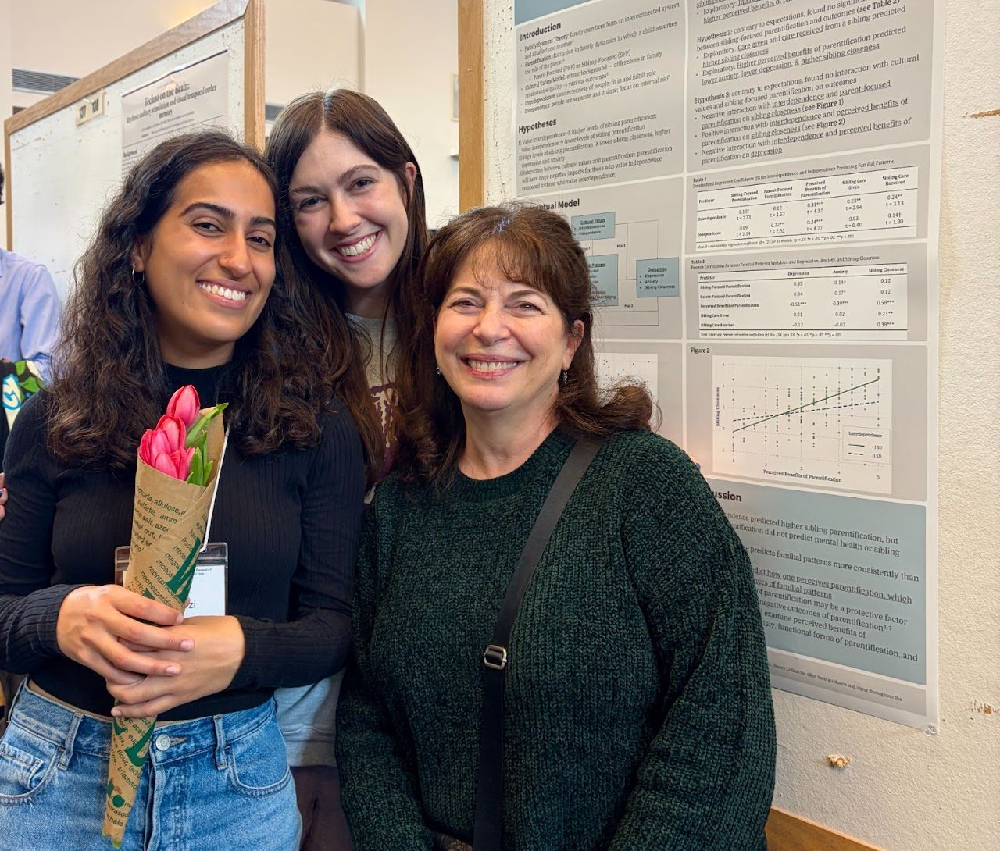
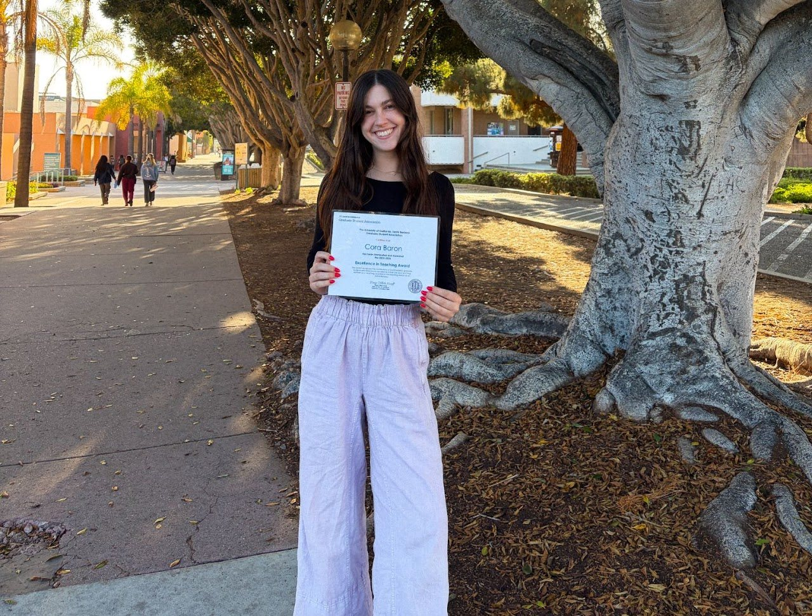

Teaching
Teaching
I aim to create a supportive, inclusive learning environment and to use evidence-based teaching methods that build students’ critical thinking and writing skills.
My teaching philosophy and pedagogical style are centered around the goals of (a) creating a supportive and inclusive learning environment and (b) using evidence-based teaching methods to enhance students’ critical thinking and writing skills. One of the main themes from my research is that people thrive most when they feel that their relationships are caring, supportive, and accepting. Supportive close relationships foster thriving by giving people the confidence to cope with challenges and to work toward achieving their goals.
In the same way, supportive teaching and mentoring relationships can help students reach their full potential by giving them the security and confidence to thrive in a rigorous academic environment, ask thoughtful questions, and make authentic connections with the material they are learning.
Instructor of record
- Research Methods (PSY 10A)
- Summer 2026 (Online) · Spring 2026 · Summer 2025
- Close Relationships (PSY 149)
- Summer 2026 · Summer 2025
Teaching assistant
University of California, Santa Barbara
- Introduction to Psychology (PSY 1)
- Winter 2023
- Research Methods (PSY 10A)
- Summer 2023
- Statistics (PSY 10B)
- Winter 2026 · Summer 2023 · Fall 2022
- Educational Psychology (PSY 124)
- Summer 2024
- Laboratory in Social Psychology (PSY 150L)
- Spring 2023
- Graduate Statistics (PSY 221A)
- Fall 2025
Arizona State University
- Emotions Science (PSY 394)
- Spring 2022
- The Human Event (HON 171)
- Fall 2020


What students say
“Cora was amazing. Extremely accessible both inside and outside the classroom and never failed to offer her support. Very kind and easy going lecturer that made going to lecture fun and enjoyable. Going into this class, I had absolutely no interest in research; Cora's passion has fueled my own passion for research delving into social psychology. Thank you Cora!”
“She is super fun and makes learning this material simple. She knows what she's talking about and always gave great answers to questions. I liked that she encouraged communication in a larger lecture (think–pair–share & writing on the board). Very engaging.”
“Professor Cora was extremely nice and welcoming. Lectures were super organized and clear, grading was clear and professor was really accessible to reach outside of class. Overall an amazing professor you can tell she has a passion for teaching. Would take her again in the future if I can.”
“Cora did a great job at making students feel welcome and delivered information well. She also made grading very fair and easy to understand.”
“Professor Baron has been extremely helpful and engaging throughout session A. She genuinely wants you to succeed and I have nothing but good things to say about her coursework and lectures.”
“This was one of my favorite courses at UCSB, Professor Baron is such a good teacher and was so engaging and entertaining. She made class really enjoyable and funny, and taught things really well and chose really interesting topics. The exams weren't too difficult and the writing assignments were fair, and I like that she had us talk to each other and share our experiences with each other. This was a great class!”
“I really enjoyed the engagement it helped to keep me focused and I think overall how the course is set up, it is easy to orient yourself.”
“Overall great class and I had so much fun taking this course. It was one of my favorite courses in my college career.”
“The peer interaction and iClicker questions allowed us to use critical thinking in class. AMAZING professor.”
“I loved the discussion questions and how comfortable people got sharing in class because of the environment created. Every lecture having studies was also really interesting to see how topics were created into data. Overall, the clicker questions were something that made us come in on the first day not knowing what to expect to coming all closer together.”
“Cora is literally the sweetest TA ever. She was always eager to help us with our questions and if she ever needed to email [the instructor] regarding our questions she did so. She was always so helpful and made sure we understood her explanations. She never minded going over the same question again and always made us feel comfortable enough to ask questions. It is really refreshing to see a TA who cares about her students' success while trying her best to be helpful. Cora is amazing!!!”
“I think Cora was a very lovely TA, she got along good with us and related to us which made for a comfortable lab environment, as well as providing good and helpful feedback when I had questions”
“Cora was a great TA and was always very well–informed on the course content. Her explanations were straight forward and not confusing as someone with limited coding experience. I always felt comfortable coming up to her to ask a question regarding our lab activities or self–guided exercises that we had to do for the class.”
*“Cora explains complex concepts in a way that makes them easy to digest. She brings a humor that keeps students engaged in the material while maintaining professionalism. I really enjoyed having Cora as a TA, and I hope to have the opportunity to take a class with her again.”
* Graduate statistics course student